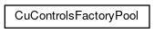
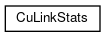

cumbia-qtcontrols
1.x
Qt widgets on top of the cumbia C++ library
Class Hierarchy
Go to the textual class hierarchy


Generated on Mon Apr 30 2018 16:36:43 for cumbia-qtcontrols by
1.8.14


 1.8.14
1.8.14